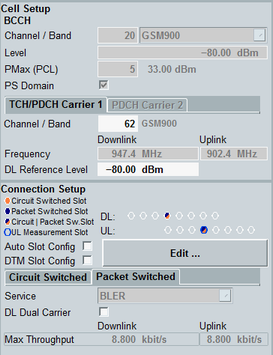

The main view provides the most important settings for fast access. Most parameters are also available in the configuration dialog.

This section contains the most important BCCH and TCH/PDCH RF settings.
- "BCCH": see "BCCH Settings"
- "PS Domain": see "Packet Switched Domain"
- "TCH/PDCH Carrier 1", "PDCH Carrier 2": see "TCH/PDCH Settings"
Returns the current GSM band used for the traffic channel (TCH/PDCH).
Remote command:Displays a graphical presentation of the DL and UL slot configuration. Slots positioned in the same row are time-aligned.
Click the "Edit" button to open the slot configuration dialog (see also "Slot Configuration Dialog").
For configuration of the UL measurement slot, see "Measurement Slot UL".
Sets the parameters in "Slot Configuration Dialog" automatically. These settings are useful for the PS multislot configuration. The automatic settings depend on the reported MS multislot class (see "Multislot Class") and the specified service (see "Service Selection").
"Auto Slot Config" is used for the pure packet switched connections, "DTM Config" is used for the dual transfer mode (CS + PS connections in parallel).
- Max UL: used for test mode A and data end-to-end - max UL throughput
- Max UL+DL: used for test mode B, SRB connection and data end-to-end - max UL+DL throughput
- Max DL: used for BLER test and data end-to-end - max DL throughput
Contain the most important CS and PS connection parameters.
The "Max Throughput" information displayed for the packet switched domain indicates the maximum possible downlink and uplink RLC throughput. The values are calculated from the configured number of PS slots and the coding schemes of these slots.
The throughput information is only displayed in the main view and can be queried via the following commands: